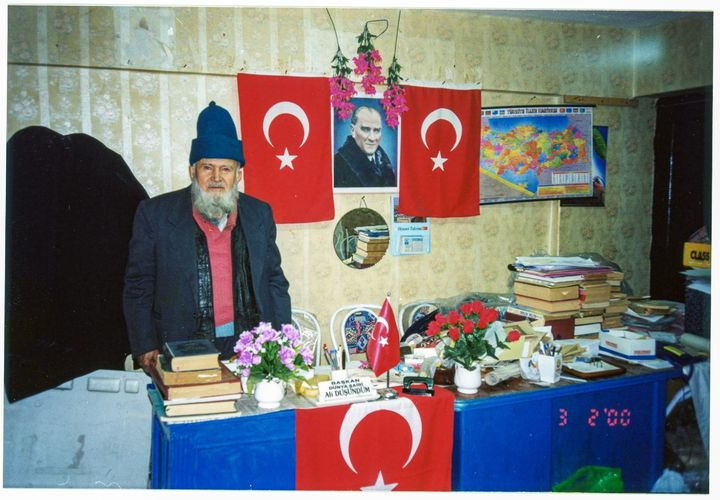
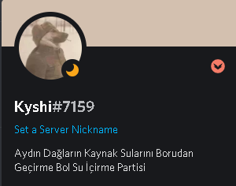

Reisimiz, liderimiz, kurucumuz Ali Düşündüm partimizin temelleri atan ve aynı zamanda fikir babası olan Resimizdir. Kendisi bir şair ve fikir adamıdır.
Reisimizin makamında bir fotoğrafı
Kendisinin yazmış olduğu davamız ile ilgili şiirini sizlere sunmaktan onur duyarım
Aydın'ın içtiği su Gerenge Dağı'ndan çıkıyor
Su başıboş derenin içerisinden akıyor
Derede sayılmayacak kadar ceset yatıyor
Su hızlı akıyor, hızı cesetlere çarpıyor
Cesetlerin verem mikrobu suya karışıyor
Mikrop suyu içenleri öldürmeye çalışıyor
Aydın'ın Belediyesi Aksu seyir bakıyor
Mikrobun kimisi verem, kimisi kuduzsa
Kuduzun mikropları suyun içinde durursa
Suyu içenler aklını oynatıp kudurursa
Kuduranlar satır alıp pazara kaçarlarsa
Pazarda insanlara savaş açarlarsa
Reisimiz bu şiiri yüzünden davalık olmuş ama dava onu kendi davasının yolundan alı koyamamıştır. Davamızın deüişmez Reisini selamlıyoruz!
Reisimizin ve davamızın yolunda, partimizi yeniden ayaklandıran ve davamızın liderliğini eline alan daavamızın başkomutanıdır.
Başkomutanımız "Discord" adlı platformdaki profili
Kendisi partimizi vizyonu ve misyonu doğrultusunda yöneten, davamıza yoldaşlık ve liderlik eden kişidir.Kadın Kolları Teşkilatımızın başkanlığını ve liderliğini üstlenen kişidir. Teşkiatımızın ilk başkanı ve kurucusudur. Davamızın yoldaşıdır.
Kadın Kolları Başkanımızın "Discord" adlı platformdaki profili
Davamıza ortak olmak isteyen kadın yoldaşlarımızı örgütlemektedir. Kadın yoldaşlarımızın davamıza aktif desteğini sağlamak ve örgütlemek için bu konuda seçmemiz gereken lider şüphesiz Peri Hanımefendiydi. Dirayeti, zekası ve liderlik yeteneği ile bu iş için ona gözümüz kapalı güvendik ve güveniyoruz.
Geçnlik Kolları Teşkilatımızın başkanlığı ve liderliğini üstlenen kişidir. Teşkiatımızın ilk başkanı ve kurucusudur. Davamızın yoldaşıdır.
Gençlik Kolları Başkanımızın "Discord" adlı platformdaki profili
Davamıza ortak olmak isteyen gençlerimizi örgütlemekte, onlara davamızı anlatmaktadır. Gençlere ve her zaman genç kalanlara değer veren partimiz bu görev için üstün bir çaba sarf etmektedir. Bu çabanın en büyüğünü de tabii ki Gençlik Kolları Teşkilat başkanımız Dolfin Suckre Castle üstlenmektedir.Dağların kaynak sularını borulara sokmanın dışında önemli bir şey daha var ki bu da o dağlardaki kaynak sularını muhafaza etmek ve çoğaltmaktır. Bu hedefimiz doğrultusunda partimiz yağmur duası etmek ve bunu sistematikletirmek için teşkilatlanma yoluna gitmiştir ve bu konuda teşkilata liderlik edebilecek yegane kişi şüphesiz Fatih Medreseleri Hocadır
Yağmur Duası Teşkilatı Başkanımız
Kendisi tecrübesi ve bilgisi ile teşkilatımıza liderlik ve davamız yolunda bize yoldaşlık etmektedir.